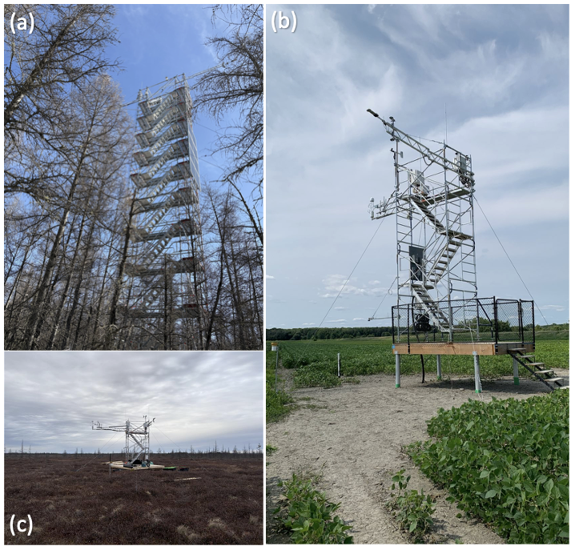

CanFlux: Canada’s Data Space for Ecosystem–Climate Interactions
CanFlux is a revitalized national network dedicated to measuring and understanding carbon, water, energy, and other exchanges between Canada’s diverse ecosystems and the atmosphere. These complex exchanges, also known as fluxes, are a critical factor in understanding climate change as they help determine the movement of greenhouse gases (GHGs) such as carbon dioxide (CO2), methane (CH4), nitrous oxide (N2O), and water vapour (H2O).
Since Canadian ecosystems play a vital role in regulating the climate by exchanging GHGs across natural and managed forests, wetlands, croplands, grasslands, and urban green space, it is crucial to continuously monitor these changes that are impacting the carbon and water cycles.
How can CanFlux help?
Ecosystem fluxes are commonly measured by installing instrumentation on “flux towers” (Figure 1) which tracks GHGs, temperature, and winds, ideally over annual to decadal timescales.

This observed flux data can be used in many ways; to determine whether ecosystems are sources or sinks of carbon, and whether this changes over time; towards estimations of GHG concentrations in the atmosphere; towards government mandated reporting of GHG emissions; and to help develop and improve models predicting the future climate, to name an important few.
CanFlux Goals and Outcomes
-
CanFlux will develop a sovereign, community-governed data platform integrating greenhouse gas, water, and energy flux data with associated meteorological and hydrological measurements.
By compiling, processing, and storing data from at least 148 recently identified historical and active flux sites across Canada.
Interactive map showing historical and active Canadian flux towers for which coordinates are also known (135). View site information in separate window.
-
CanFlux will provide the data and tools needed to track ecosystem responses to climate change, improve predictive models, and guide risk mitigation and sustainable management decisions.
By integrating flux tower measurements, ground observations (e.g., using alternative measurement methods for carbon and water), remote sensing by satellites, and modelling.
-
CanFlux will strengthen Canada’s resilience and our capacity to anticipate and adapt to climate-related risks while advancing its climate goals through open, high-quality, and policy-relevant environmental observations.
Rooted in collaboration among Canadian scientists, federal and provincial governments, Indigenous partners, NGOs, and the private sector.
-
CanFlux aims to enhance efforts to track GHG fluxes and advance Indigenous-led stewardship, nature-based climate solutions, carbon markets, and climate policy.
While Canada has a strong legacy of eddy covariance flux measurements, national coordination has waned since the end of Fluxnet-Canada in 2014. As a result, valuable datasets remain underutilized due to fragmented infrastructure and limited long-term support.
Mission
Consistent Data Processing
CanFlux will apply consistent approaches to quality control, gap-filling, and flux partitioning allowing comparability across sites and increasing their value for national inventories, remote-sensing validation, and ecosystem modelling.
Long-term Data Curation
Sustained financial support for long-term data curation means essential observations are less vulnerable to loss due to projects ending, funding lapses, or staff transition - significantly reducing the risk to Canada’s national monitoring capacity.

CanFlux: More than Flux Data
In the long-term, we envisage the CanFlux network incorporating supporting and auxiliary data that can be utilized in research and carbon modelling alongside the flux data. Additional biophysical datasets are available across the CanFlux network of sites, but lack of standards for measurements and reporting limit the utility of this data. The CanFlux network will support standardization and collection of all data sets needed to support local and national modelling efforts that will advance earth system modelling and GHG reporting, and Canada’s leading role in these international efforts.